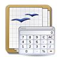

Wiki
Mitmachen
- Wikiartikel anlegen
- Howto anlegen
- Wiki-Referenz
- Wiki-Syntax
- Baustellen
- Artikelideen
- Ungetestete Artikel
- Ausbaufähige Artikel
- Fehlerhafte Artikel
- Rund ums Wiki
Konfiguration
- Backlinks anzeigen
- Exportieren
Office Komponenten
Auf dieser Seite werden die Komponenten von LibreOffice sowie Apache OpenOffice beschrieben.
Programme¶
Writer - Textverarbeitung¶
Mit Writer können sowohl kurze Texte wie Briefe, Memos, Etiketten, Visitenkarten als auch umfangreiche Schriften wie Bücher oder mehrteilige Dokumente mit Tabellen sowie Inhalts- und Literaturverzeichnisse geschrieben und gestaltet werden. Die Textverarbeitung bietet gängige Funktionen wie Textbausteine, Teamfunktionen, Rechtschreibprüfung, Silbentrennung, Thesaurus, Autokorrektur sowie verschiedene Dokumentenvorlagen. Mithilfe eines Assistenten werden eigene Dokumentvorlagen, Briefe, Faxe und Tagesordnungen erstellt. Zur besseren Bearbeitung umfangreicher Schriften können einzelne Textdokumente nachträglich zu einem gemeinsamen Globaldokument zusammengefügt werden.
Formatvorlagen für einzelne Zeichen, Absätze, Rahmen und Seiten können mit dem Stylist erstellt und zugewiesen werden. Der Navigator erlaubt es sich schnell im Dokument zu bewegen, es in einer Gliederungsansicht zu betrachten und den Überblick über darin eingefügte Objekte zu behalten. Innerhalb der Texte können verschiedene Verzeichnisse erzeugt und angepasst werden. Über Live-Hyperlinks und Textmarken kann man direkt zu Textstellen springen.
Texte können mehrspaltig formatiert und mit Textrahmen, Tabellen, Grafiken und anderen Elementen versehen werden. Mithilfe der Zeichenwerkzeuge werden innerhalb des Dokuments Zeichnungen, Grafiken, Legenden und andere Zeichenobjekte erstellt beispielsweise für Newsletter, Broschüren oder Einladungen. Grafiken unterschiedlicher Formate können eingebunden werden, z. B. Grafiken in den Formaten GIF oder PNG. Es lassen sich die gängigen Bildformate im Textverarbeitungsdokument mit dem mitgelieferten Bildbearbeitungswerkzeug bearbeiten. Clipartsammlungen, Animationen und Klänge werden in der Gallery verwaltet und nach Themen geordnet.
Textdokumente verfügen über eine integrierte Rechenfunktion, mit deren Hilfe Rechenoperationen oder logische Verknüpfungen ausführt werden. Die für die Berechnung benötigte Tabelle lässt sich in einem Textdokument erstellen. Der HTML-Editor ist ein WYSIWYG-Editor zum Erstellen von Webseiten. Ein umfassendes Hilfesystem deckt Anweisungen für einfache und komplexe Vorgänge ab.
Calc - Tabellenkalkulation¶

In Calc werden Daten in Tabellen bearbeitet, analysiert, verwaltet und verdeutlicht. Daten können angeordnet, gespeichert und gefiltert werden. Die Tabellenkalkulation bietet über 450 Berechnungsfunktionen z. B. aus den Bereichen Finanzen, Statistik, Mathematik, Matrix, Datum und Zeit. Es steht ein Funktions-Assistent zum Erstellen von Formeln und komplexen Berechnungen zur Verfügung. Teil- oder Gesamtergebnisse können berechnet werden.
Mit Calc ist es möglich, Tabellen durch Ziehen und Ablegen aus Datenbanken zu übernehmen und Tabellendokumente als Datenquelle einzusetzen. Bestimmte Datenbereiche können ein- oder ausgeblendet werden. Ein Datenpilot für die Analyse von Zahlenmaterial ist vorhanden. Es besteht die Möglichkeit, in Berechnungen, die aus mehreren Faktoren bestehen, die Auswirkungen von Änderungen einzelner Faktoren beobachten zu können. Außerdem stehen zur Verwaltung umfangreicher Tabellen verschiedene vordefinierte Szenarien zur Verfügung. Calc ermöglicht die Darstellung von Tabellendaten in dynamischen Diagrammen, die bei Änderung der Daten automatisch aktualisiert werden. Ein Assistent für Diagramme ist vorhanden.
Impress - Präsentation¶
Mit Impress können Vortragsfolien mit Animationen und verschiedenen Hintergründen erstellt werden. Präsentationen können mit Diagrammen, Zeichenobjekten, Multimedia- und vielen anderen Elementen versehen werden. Einzelnen Folien können unterschiedliche Übergangseffekte zugeordnet werden. Ein Assistent für die Erstellung von Präsentationen ist enthalten sowie verschiedene Vorlagen. Beim Erstellen einer Präsentation stehen mehrere Ansichten zur Verfügung. Die Folienansicht zeigt z. B. die Folien im Überblick, während die Handzettelansicht zusätzlich zur Präsentation begleitenden Text enthält. Die Folien können auf dem Bildschirm automatisch vorgeführt oder manuell gesteuert werden. Das Timing der Präsentation kann angepasst werden. Die Präsentationen können als Handzettel verteilt oder als HTML-Dokumente gespeichert werden.
Draw - Grafiken¶
Mit dem vektorbasierten Draw ist es möglich, verlustfrei skalierbare 2D- und 3D-Zeichnungen zu erstellen. Draw erzeugt Vektorgrafiken aus Linien und Kurven, die durch mathematische Vektoren definiert sind. Vektoren beschreiben Linien, Ellipsen und Polygone entsprechend ihrer Geometrie. Mit Draw können Objekte wie Würfel, Kugeln oder Zylinder erzeugt und die Lichtquelle der Objekte geändert werden. Es sind Vorlagen für Zeichnungselemente und eine Auswahl an anpassbaren Formen enthalten.
Tabellen, Diagramme, Formeln und andere in LibreOffice bzw. in OpenOffice erzeugte Elemente können in Zeichnungen einfügt werden. Raster und Fanglinien sind optische Hilfen, die die Anordnung von Objekten in Zeichnungen erleichtert. In Draw lässt sich die Beziehung zwischen verschiedenen Objekten mit speziellen Linien, so genannten Verbindern zeigen. Die Verbinder werden an die Klebepunkte der Zeichenobjekte angefügt und lösen sich auch nicht, wenn die miteinander verbundenen Objekte verschoben werden. Mit Draw können lineare Größen, z.B. für technische Zeichnungen, anhand von Bemaßungslinien berechnet und anzeigt werden. Es ist möglich, Zeichnungen in unterschiedlichen Formaten zu speichern – darunter: BMP, EPS, GIF, PNG, SVG, TIFF.
Base - Datenbank¶
Mit Base werden große Datenmengen gespeichert und für Abfragen und Berichte bereitgestellt. Es dient als Frontend für Tabellen und Abfragen. Base unterstützt einige Datenbankformate, wie zum Beispiel das dBase-Format und kann auch selbst kleinere Datenbanken in einer kompakten Datei ablegen. Externe Datenbanken, wie beispielsweise MySQL, SQLite oder PostgreSQL, können mittels ODBC oder JDBC angebunden werden. LDAP-kompatible Adressbücher, genau so wie andere übliche Formate von Evolution oder Mozilla Thunderbird stehen als Datenquelle z.B. für Serienbriefe zur Verfügung.
Math - Formeleditor¶
Der Formeleditor dient zum Verfassen von mathematischen Formeln. Formeln werden in Math nicht ausgewertet, es ist also kein Rechenprogramm oder gar ein Computeralgebraprogramm. Formeln werden oft als Objekte innerhalb eines anderen Dokuments erstellt. Beim Einfügen einer Formel in ein anderes Dokument wird Math automatisch gestartet. Der Aufbau von Formeln wird durch Operatoren, Funktionen und Formatierungshilfen unterstützt, die in einem Auswahlfenster zu finden sind und dort mit der Maus angeklickt werden können, um sie hinzuzufügen. Vordefinierte Symbole, Sonderzeichen und Funktionen stehen zur Verfügung. Es können eigene Symbole erstellt und Zeichen aus fremden Zeichensätzen übernommen werden. Eine Formel kann auch direkt eingegeben werden. In einem Befehlsfenster können Formeln bearbeitet werden. Die Eingaben im Befehlsfenster werden gleichzeitig im Textfenster angezeigt. Es gibt 3 (Haupt-) Möglichkeiten, eine Formel mit Math zu erstellen:
Schreibt die Markup-Sprache im Formeleditor
Führt einen Rechtsklick auf den Formeleditor aus und wählt das Symbol aus dem Kontextmenü aus
Wählt ein Symbol von der Auswahl-Symbolleiste aus
Diese Revision wurde am 12. November 2013 18:05 von frustschieber erstellt.
- Erstellt mit Inyoka
-
 2004 – 2017 ubuntuusers.de • Einige Rechte vorbehalten
2004 – 2017 ubuntuusers.de • Einige Rechte vorbehalten
Lizenz • Kontakt • Datenschutz • Impressum • Serverstatus -
Serverhousing gespendet von